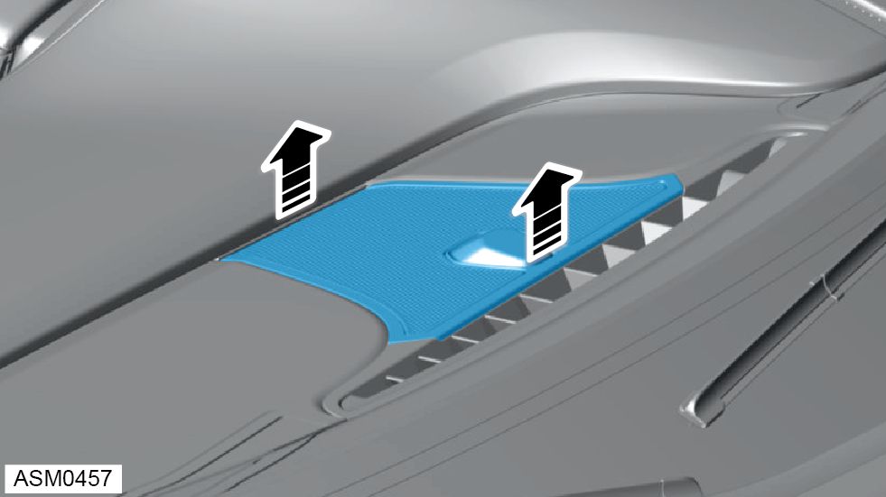
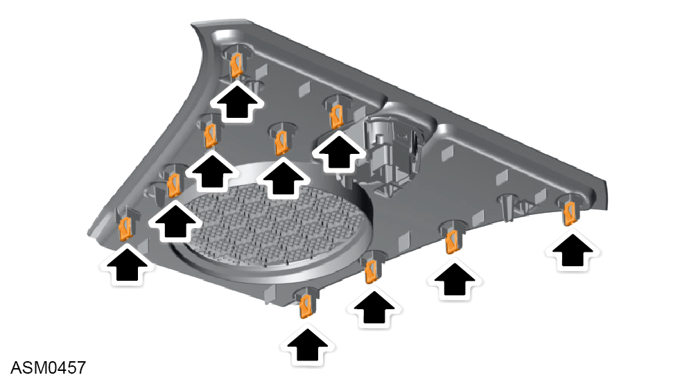
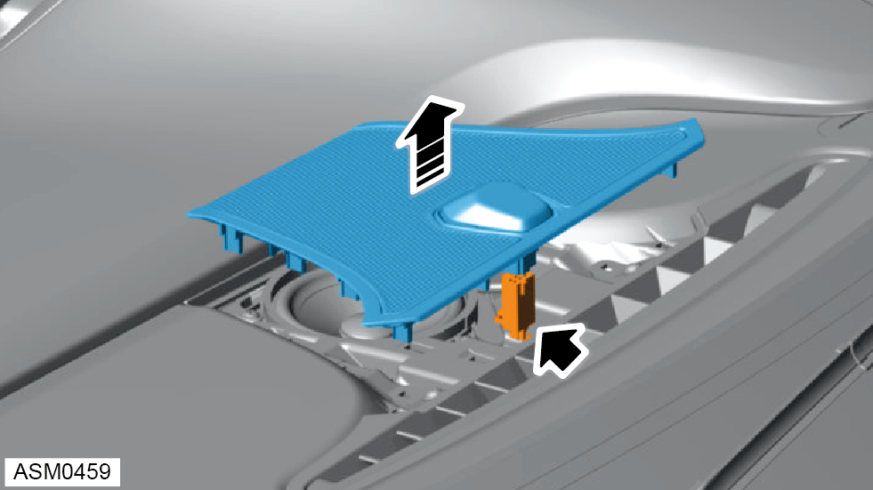
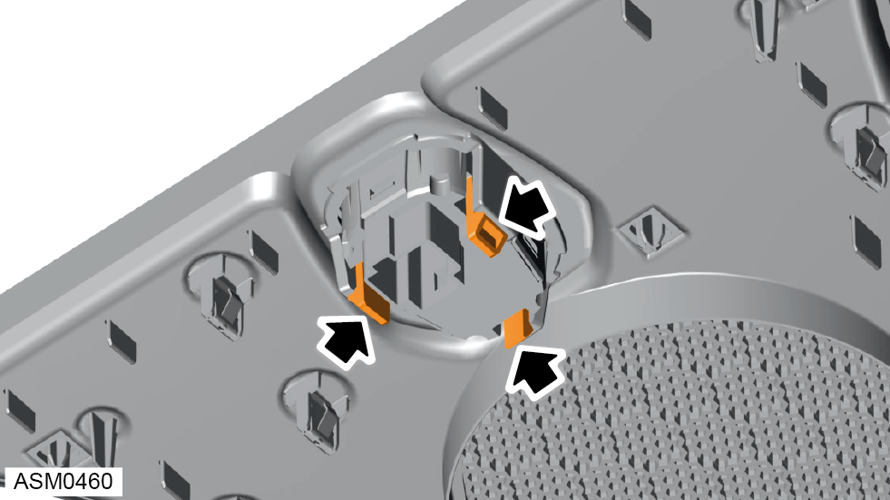

Sun Sensor / Speaker Panel
Print
Operation Code: 14.05.38-02
Removal

- Use suitable flat bladed trim removal tool to carefully disengage clips (x10) to release sun sensor/speaker panel from facia.

- Refer to illustration for clip type and location.

- Lift sun sensor/speaker panel to gain access to sun sensor harness connector and disconnect.
- Remove sun sensor/speaker panel from vehicle.
Do not carry out further disassembly if component is removed for access only.

- Disengage clips (x3) securing sun sensor to speaker panel.
- Remove sun sensor from speaker panel.
Installation
- Installation is the reverse of removal procedure except for the following:
- Perform a diagnostic read and clear error memory using Lotus Insight tool.